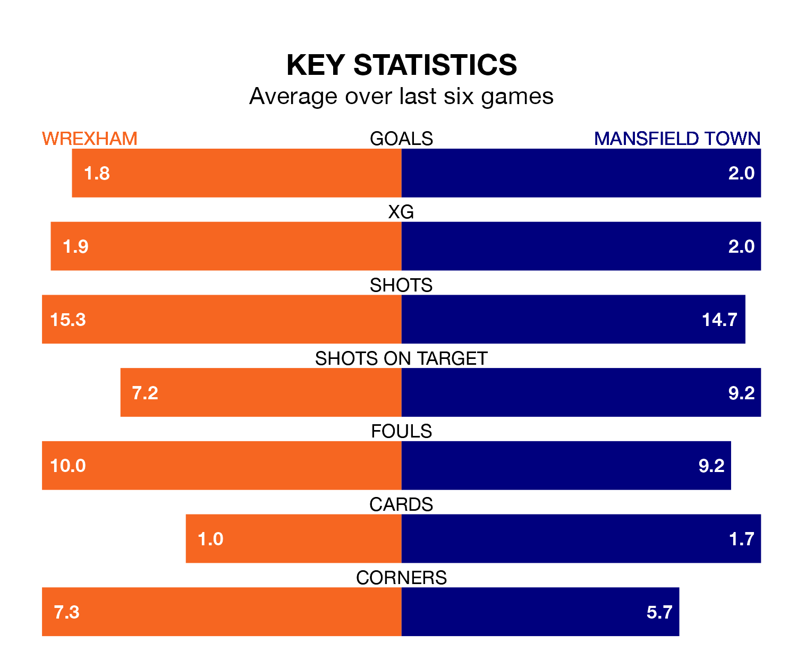

Two of EFL League Two's top sides face each other at the Racecourse Ground in Friday's kick-off, when third-placed Wrexham host table-topping Mansfield Town.
Wrexham have picked up 20 wins and 10 draws from 39 games so far this season, and sit three points below the visitors going into the 3pm match.
The Stags, meanwhile, have won 20 and drawn 13, picking up 73 points.
With 79 goals in 39 games so far this season, Mansfield are the league's highest scorers with 2.0 goals per game. And they are conceding fewer than average, letting in 37 goals at a rate of 0.9 per game.
Wrexham are also above average scorers, with 1.8 goals per game, compared to a league average of 1.5. They have conceded 1.2 goals per game.
In Davis Keillor-Dunn, Town have one of the league's most on-form strikers so far this season. He has notched 19 goals in 39 appearances, to sit fourth in the scoring charts.
His goal rate of one every 157 minutes is slightly quicker than that of Paul Philip Mullin, the Dragons' top scorer with a goal every 152 minutes, and a total of 16 goals in 31 games.
The hosts are in reasonable form in EFL League Two, with three wins and two draws from their last six games.
With three wins and a draw over that period, the Stags' form is slightly worse – they have taken 10 points from 18, compared to Wrexham's 11.
Over the last two years, Wrexham and Mansfield have played each other twice. Wrexham won one of them and they drew the other.
Their last meeting was on November 4, when Wrexham won 2-1 away.
Wrexham's last match was on Saturday, a 3-1 win against Grimsby Town, with Andy Cannon (two) and Mullin getting the goals for the Dragons.
Mansfield drew 1-1 with Colchester United last time out, also on Saturday, with Lewis Brunt on the scoresheet.
Updated: 12:16 (UTC), 25/03/24